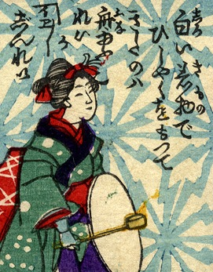

船幽霊；フナユウレイ，女；オンナ

柄杓を手に持った女。詞書には「白い着物で柄杓を持ってきたのは舟幽霊か。イエイエ巡礼」とある。
著作者：芳幾近二／出典：親書誌：U426_nichibunken_0229：新作おばけ野噺；シンサクオバケノバナシ／日付：2010／資源識別子：U426_nichibunken_0229_0024_0000
Copyright (c)2010- International Research Center for Japanese Studies, Kyoto, Japan. All rights reserved.